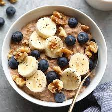

Oatmeal

Description
Learn how to make the perfect bowl of oatmeal!
- 1/2 cup rolled oats
- 1 cup water, milk, or non-dairy milk
- 1/4 tsp. salt
Steps
- In a small saucepan, bring the water or milk and salt to a boil over medium-high heat. Once boiling, stir in the oats and reduce the heat to medium-low. Let the oatmeal simmer for 5 minutes or until it reaches your desired consistency. Make sure to stir occasionally.
- Remove the pan from the heat, cover with a lid, then let it rest for a few minutes. This will give the oats time to absorb the liquid. If they look too dry, stir in a splash more liquid.
- Top your oatmeal with your favorite ingredients then serve!